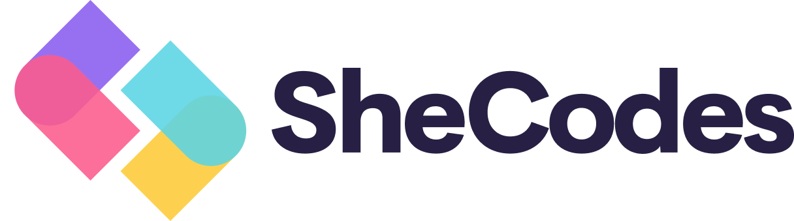

Hi, I'm Lisa! Thanks for learning more about me.
I'm originally from New York, but have worked and studied abroad quite a bit and currently live in Los Angeles. Most of my career has been in restaurants and food retail: cheesemonger, cook, bartender, sommelier and general manager, but technology has always played a part in how I engage with the world.
Some other things that interest me:
- 
I believe that a sincere commitment to diversity means actively extending an invitation, and SheCodes works hard to welcome women into the community of coders. Their bootcamp helped me learn new skills with structure and support. 
Learning any new language opens up a whole new world! French in Normandy was an incredible resource, both online and in person, to help me get to that "next level" of communication in French.